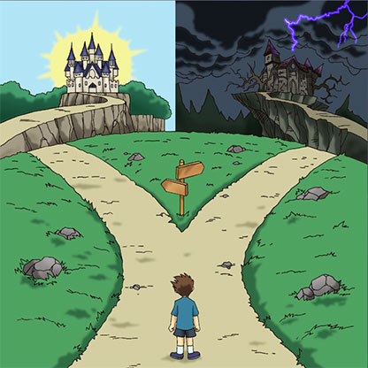

Pere Gil se emociona al leer la carta, pues siente que la oportunidad llegó justo en el momento perfecto. Aún así, sabe que su padre no lo aceptaría si le cuenta por lo que Pere Gil: Sigue sus sueños La rechaza y sigue las expectativas de su padre  Imagen: Demostración de los caminos a tomar Ahora, ¡Decide! ㅤㅤㅤㅤㅤㅤㅤㅤSigue sus sueñosㅤㅤㅤㅤㅤㅤㅤㅤ ㅤLa rechaza y sigue las expectativas de su padreㅤ